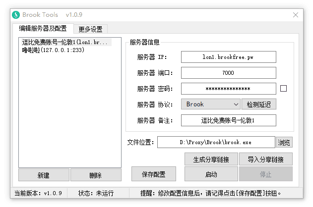

看到很多人反映 Brook Windows系统的客户端不好用什么的，我就简单写了个 客户端UI ，参考了SSR的使用习惯，实现了各种功能，对于使用过SSR客户端的人来说应该很容易上手。
Brook Linux 一键脚本：『原创』一个优秀的跨平台 Socks5代理软件 —— Brook 一键安装管理脚本
Brook Linux 手动教程：一个优秀的跨平台 Socks5代理软件 —— Brook 服务端教程
Brook 客户端教程：Brook代理 Windows/Android版客户端简单使用教程
Brook 一键脚本及 Brook Tools 视频教程：『视频』Brook 代理 一键脚本及客户端 小白使用教程
其他 Brook 教程请看：https://doub.io/tag/brook/
当前版本：1.0.14
主要功能
- 支持 多服务器管理
- 支持 直连模式、PAC模式、全局模式
- 支持 生成/导入 分享链接功能（编码格式遵循 Brook 官方标准）
- 支持 VPN 模式
- 支持 账号自检
- 支持 开机启动
- 等等
直连模式说明：
PAC模式、全局模式很多人能理解是什么意思，但是部分人不清楚直连模式是什么鬼，我就简单解释一下。
你们知道 PAC模式和全局模式就是软件设置了系统代理设置，然后浏览器会读取系统代理模式，比如访问谷歌，会判断PAC内是否有谷歌域名，如果有就走代理，如果没有就直连，而全局模式则是所有网站走代理。
而直连模式则代表不设置系统代理模式，选择后会初始化系统代理设置。然后就需要在相应软件中配置代理服务器 HTTP协议 127.0.0.1 2080(默认)，这样相应软件才会走代理，例如 Chrome 浏览器代理管理扩展 SwitchyOmega（点击查看新手使用教程）。
注意：Brook Tools 默认是 HTTP协议（以HTTP方式启动），如果需要使用 SOCKS5协议，请取消勾选。
截图展示


使用方法
本软件是一个辅助软件（可视化UI操作），他无法独立使用，需要配合 Brook Windows命令行版客户端使用。
所以要使用该软件请先下载 Brook Windows命令行版客户端：逗比云地址 、Github地址（请选择 brook_windows_386.exe 或 brook_windows_amd64.exe）。
注意：不是 钥匙图标 的那个 Brook Windows 客户端！不要下载错客户端，该软件需要的是命令行的客户端。
为了方便大家使用，我把32位和64位的命令行版客户端都集成在压缩包内了，打开软件后选择相应的命令行版客户端即可（命令行版客户端可能会经常更新，到时间请手动更新或提醒我更新压缩包）。
下载 Brook Windows命令行版客户端后，放置到任何位置（路径中不能包含中文和空格，否则PAC失效）- 下载 Brook Tools 客户端文件，解压后放置到任何位置，并运行软件。
- 运行软件后填写 Brook 账号或者导入 Brook 分享链接，并点击 浏览 按钮，选择命令行版客户端文件。
- 点击 启动 按钮（或者右键托盘菜单 - 启动）。
- 根据需求在 托盘菜单 - 代理模式 中可以选择 直连模式、PAC模式（默认）、全局模式。
无法使用？请先使用 [账号自检] 功能检测账号是否可用。
如果提示可用，那么请尝试 检查系统代理设置(点击看教程)！
如果账号不可用，那么可以试试我 免费分享的 Brook 账号！
下载地址
蓝奏云[JPG.DOG]
注意：每次更新最新版本时，因为微软审核需要一天左右的时候，所以这期间 Windows Defender 会报毒，请选择信任或者等待两天后再用。
更新内容
2018年09月21日，版本 v1.0.14
1. 取消 检查 Brook 命令行客户端(是否正确或损坏)功能。
—— 似乎问题比较多，想了想还是去掉吧（依然会检测版本号）。
2018年09月20日，版本 v1.0.13
1. 新增 手动检测更新时，如果没有更新同样也会提示（启动软件时的检测更新不会提醒）。
2. 新增 Brook 命令行版客户端添加后，将会检查是否为 Brook 命令行客户端（或是否损坏）。
3. 取消 从逗比云下载PAC(老是被墙)，改成 Github 。
点击展开 查看更多
2018年09月04日，版本 v1.0.12
1. 新增 启动程序/启动代理时，检测 brook.exe 文件是否存在。
2. 新增 通过多线程方式更新PAC文件（更新期间不再影响用户操作）。
3. 修复 当程序路径包含空格时，检测 brook.exe 命令行客户端最新版本错误的问题。
4. 修复 当程序路径包含空格时，可能会启动失败的问题。
2018年09月04日，版本 v1.0.11
1. 新增 检测 brook.exe 命令行版客户端的最新版本功能。
2. 新增 VPN模式下[账号自检]功能（不需要特意勾选[HTTP方式启动]）。
3. 优化 VPN模式（取消自动检测，需要手动指定，但只需指定网卡默认网关）。
4. 修复 一些逻辑BUG。
2018年09月03日，版本 v1.0.10
1. 新增 VPN模式（位于服务器协议选择框中）
2018年08月19日，版本 v1.0.9
1. 新增 服务器备注功能。
2. 新增 允许局域网连接功能。（如果要连接IPv6服务器，请勾选）
3. 新增 托盘图标根据代理状态而区分颜色功能。（未启动代理时，托盘图标为绿色，启动代理后，为蓝色）
4. 优化 托盘图标提示信息中加入显示当前连接的代理服务器IP及端口。
5. 优化 导入分享链接功能。
6. 优化 退出时，将会自动保存配置。
7. 取消 软件窗口置顶。
2018年05月24日，版本 v1.0.8
1. 新增 自动获取逗比云域名，避免逗比云更换域名后无法更新PAC。
2. 新增 当 Brook Tools 开机启动时，不再弹出[代理启动成功]的提示（如果启动失败依然会弹出）。
3. 修改 初始代理模式为 PAC 模式。
4. 优化 一些提示文字。
5. 去除 镜像域名相关代码（毕竟取消了）。
2018年04月05日，版本 v1.0.7
1. 新增 自定义账号自检 测试网址 与 超时时间 设置。
2. 新增 账号自检结果中将显示 测试网址 与 测试时间。\cp -f /usr/share/zoneinfo/Asia/Shanghai /etc/localtime
2018年02月20日，版本 v1.0.6
1. 新增 禁止多开 Brook Tools 功能。
—— 老是有一些人本应该选择 Brook 命令行版客户端的，结果选成了 Brook Tools，最后导致 Brook Tools 启动了 Brook Tools ，还一边说用不了用不了。。。
2018年02月01日，版本 v1.0.5
1. 新增 开机启动后，自动启动代理 并 隐藏编辑服务器的窗口。
2. 修复 开机启动失败的问题。
2018年01月31日，版本 v1.0.4
1. 新增 检测延迟 功能。
—— 窗口上的 检测延迟 按钮只能测试服务器IP输入框内的IP，而托盘菜单优先测试当前运行中的服务器IP，如果没有运行就和窗口上的 检测延迟 按钮功能一致。
2. 更新 托盘图标提示文本。
—— 加入了本地代理信息，例如：HTTP 127.0.0.1 2090
3. 调整 账号自检 功能的逻辑。
—— 不再根据 是否勾选HTTP方式启动 来设置 账号自检 功能的是否禁用了，如果不是HTTP方式启动，那么点击会自动提醒，避免了一些人不知道为什么 账号自检 功能无法点击。。。
2018年01月30日，版本 v1.0.3
1. 新增 账号自检 功能。
—— 要使用该功能，请选择你要检测的账号并启动代理，然后 [右键托盘图标 - 账号自检]，最多10秒后就会提示账号是否可用。
注意：因为协议所限，目前只支持HTTP协议账号自检，所以请勾选 [HTTP方式启动] 后再启动代理。
2. 修复 软件底部的版本号显示错误的问题。
2018年01月30日，版本 v1.0.2
1. 新增 HTTP 和 SOCKS5 启动方式切换选项。
—— 一些软件使用 HTTP协议的代理服务器 可能会无法使用，所以增加了一个切换选项在 右键托盘菜单 中。
注意：如果不以 HTTP方式启动（也就是SOCKS5方式启动），那么因为协议限制所以全局模式会禁用。
2018年01月30日，版本 v1.0.1
1. 修复 托盘菜单中 停止 选项功能错误问题。
2018年01月30日，版本 v1.0.0
1. 发布 正式版本。
注意事项
- 该软件仅支持 Windows 系统，至于 Linux 和 Mac 用户...（
 啦啦啦~）
啦啦啦~）
- Brook Tools 因为VPN模式的原因，需要管理员权限，所以启动时可能会提示授权，点击[是]即可。
- 该软件由 E语言 编写(重拾初中姿势)，所以部分杀毒软件可能报毒，我原创的软件绝对没有病毒！
其他说明
VPN模式说明
注意：Brook 的VPN模式，仅仅是让所有流量都走代理（虚拟网卡），并不专门加速游戏，游戏是否加速取决于你与代理服务器之间的延迟和丢包，以及代理服务器与游戏服务器之间的延迟和丢包。
注意：VPN模式仅仅是为了让玩游戏等特殊需求的人使用，如果是正常科学上网，不推荐使用 VPN模式，一是不灵活，二是国内的软件或网站或IP也都走代理了，这意味着被墙风险增加。
注意：因为 VPN模式 需要管理员权限才能启动，所以 v1.0.10 后版本的 Brook Tools 启动时将默认申请管理员权限，如果你看到 UAC提示，请选择[是]，如果嫌烦，请自行搜索关闭 UAC 教程。
另外：使用 VPN功能时，强制使用 SOCKS5 协议，且允许来自局域网的链接功能失效（就是局域网无法连接你的代理）。
点击展开 查看更多
Brook 新版本(v20180909后)支持以 VPN模式启动，也就是代理整个电脑的所有 TCP/UDP 流量（ICMP不代理，所以使用后无法Ping）。
使用这个功能前，需要注意一些问题：
首先安装虚拟网卡，最新版本的压缩包里有个 tap-windows-X.X.X.exe 文件，右键 以管理员方式运行 安装完即可（教程）。
然后确保你的 Brook 服务端和 Brook 客户端(命令行客户端，即 brook.exe)均为最新版本(v20180909后)。
然后正常填写你的 Brook 代理账号，且代理账号的服务端协议必须是 Brook 新版协议（Brook Stream不行）。
最后就是查一下你的网卡(网络连接)默认网关并填写到 Brook Tools 中即可。
打开 CMD，运行 ipconfig 命令，如上图所示：
填写到 Brook Tools 更多设置 - VPN模式设置 中，再去服务器协议选择框中选择 VPN 后启动代理试试！
这个以太网就是你的物理网卡，就是网线接着的网卡（路由器局域网上网），如果你是拨号上网，那么就看拨号链接的默认网关，如果你是 WIFI 上网，那么就看 WIFI 的默认网关。

账号自检失败，可能的原因 一
客户端与服务端版本不一致
点击展开 查看更多
因为 Brook 每次更新的内容可能变动较大，所以如果客户端与服务端版本不一致，那么很有可能会导致客户端链接服务端被拒绝。包括我的 Brook Tools 里调用的 Windows 命令行版客户端，所以请尝试更新服务端或客户端为最新版本。
账号自检失败，可能的原因 二
客户端与服务端的设备系统时间相差过大。
点击展开 查看更多
当服务器与本地设备系统时间相差过大，会导致客户端无法与服务端建立链接。
请修改服务器时区，或者手动修改服务器系统时间（注意也要校准自己本地设备时间）！
\cp -f /usr/share/zoneinfo/Asia/Shanghai /etc/localtime
# 修改时区为北京时区(上海)
date -s "2017-11-02 19:14:00"
# 修改系统时间为 2017年11月02日 晚上19点14分00秒
date "+%Y-%m-%d %H:%M:%S %u %Z"
# 查看服务器当前时间
账号自检失败，可能的原因 三
Windows 防火墙阻挡代理软件。
点击展开 查看更多
目前发现 Windows 防火墙会阻挡代理软件对外建立的链接，所以需要关闭 Windows 自带的防火墙。
关闭步骤：
控制面板 =>
中上部搜索框搜索[Windows Defender 防火墙] =>
点击左侧的 启动或关闭 Windows Defender 防火墙 选项 =>
选择 专用网络设置 / 共用网络设置 - 关闭 Windows Defender 防火墙，然后点击确定按钮即可。
Telegram 等部分软件无法通过 HTTP 127.0.0.1 2080 连接代理
经过测试，部分软件设置 HTTP 协议的本地代理会出现无法连接代理的问题，如果出现这种情况，那么只需要右键托盘图标 - 取消勾选 HTTP方式启动，然后再启动代理，最后把无法使用 HTTP 协议连接代理的软件里改成 SOCKS5 协议的本地代理(127.0.0.1 2080)。
Windows 10 系统不显示启动/停止/账号自检等通知信息
这个问题一般是因为 Windows 10 系统的通知被关闭导致的，请去控制面板 - 通知和操作 - 开启 获取来自应用和其他发送者的通知 。


有问题或者反馈BUG（需提供可复现步骤）请在下面留言！
转载请超链接注明：逗比根据地 » 『原创』更方便的Windows系统 Brook 客户端 —— Brook Tools
责任声明：本站一切资源仅用作交流学习，请勿用作商业或违法行为！如造成任何后果，本站概不负责！


这时候 Brook Tools 就是监听的 0.0.0.0 ，其他设备只需要填写 HTTP或SOCKS5代理 192.168.x.x(你电脑的内网IP) 2080(默认端口)即可连接。
唯一涉及网络方面的，还是VPN模式，但是这个全程都是 Brook 命令行版客户端操作的，Brook Tools 仅仅负责管理和启动 Brook 命令行版客户端。
我这边还没有推送 1809 版本。不过我查了下，最近 1809 爆出了好多问题BUG(不是月初的那次)，不保证你说的情况是 1809 导致的，估计短时间内 1809 不会跟我见面。
检查一下系统开机启动项，是否存在 Brook Tools 的开机启动项，如果没有说明软件添加开机启动项失败(通过注册表添加，所以可能被一些安全软件拦截)。
如果存在，请检查文件路径有没有问题。
Brook 启动VPN模式后，会将网卡的DNS改为 127.0.0.1 ，但它并没有记录原 DNS，所以最后会给修改成 8.8.8.8 。
请看这个教程解决：https://doub.io/dbkp-3/ 或者使用扩展管理代理设置：https://doub.io/dbrj-13/
Brook Tools 和 Brook 原版客户端或者说 SS SSR客户端不一样。
我不懂 Go 语言，我只会写个Win GUI 外壳，通过CDM和启动参数来启动 Brook 命令行版客户端，这意味着无法实现热重启，除非 Brook 自身支持从配置文件读取并且支持热读取(运行中读取)。
没有热重启，你要的功能就很蛋疼的，实现是能实现，就是很别扭。
提一个问题，就是如果在开启代理的情况下，直接重启电脑（或者把进程杀掉），会导致不能上网。今天我就被这个问题折腾的不行= =。 给一个解决办法，在重启电脑的情况下应该可以解决。 就是在主窗口的这个事件里：__启动窗口_可否被关闭 添加一个判断：若代理已启动，就执行一下停止按钮被单击的事件 .版本 2 .子程序 __启动窗口_可否被关闭, 逻辑型 .如果真 (代理已启动) _按钮_停止代理_被单击 () .如果真结束 返回 (真) 但是如果进程被强制结束，我暂时没想到啥简单的解决办法能在被结束前做处理。上不了网，你就打开 Brook Tools 再次启动和停止代理即可（或者启动代理后，选择 直连模式）